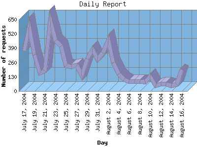

NPS Internet Solutions, Inc.
NPS Internet Solutions, Inc.
The Daily Report identifies the activity for each day within the reporting period. Remember that one page hit can result in several server requests as the images for each page are loaded.

| Day | Number of requests | Number of page requests | Number of bytes transferred | |
|---|---|---|---|---|
| 1. | July 17, 2004 | 367 | 42 | 37.156 MB |
| 2. | July 18, 2004 | 583 | 87 | 43.936 MB |
| 3. | July 19, 2004 | 329 | 54 | 30.128 MB |
| 4. | July 20, 2004 | 166 | 36 | 16.608 MB |
| 5. | July 21, 2004 | 181 | 46 | 17.585 MB |
| 6. | July 22, 2004 | 641 | 69 | 78.243 MB |
| 7. | July 23, 2004 | 458 | 58 | 53.442 MB |
| 8. | July 24, 2004 | 408 | 49 | 49.647 MB |
| 9. | July 25, 2004 | 232 | 26 | 31.106 MB |
| 10. | July 26, 2004 | 221 | 33 | 28.195 MB |
| 11. | July 27, 2004 | 238 | 39 | 26.411 MB |
| 12. | July 28, 2004 | 144 | 25 | 17.455 MB |
| 13. | July 29, 2004 | 296 | 39 | 36.491 MB |
| 14. | July 30, 2004 | 377 | 62 | 41.972 MB |
| 15. | July 31, 2004 | 291 | 57 | 33.569 MB |
| 16. | August 1, 2004 | 347 | 53 | 31.017 MB |
| 17. | August 2, 2004 | 462 | 86 | 42.531 MB |
| 18. | August 3, 2004 | 257 | 48 | 23.928 MB |
| 19. | August 4, 2004 | 155 | 38 | 13.197 MB |
| 20. | August 5, 2004 | 106 | 26 | 9.905 MB |
| 21. | August 6, 2004 | 90 | 20 | 7.713 MB |
| 22. | August 7, 2004 | 87 | 25 | 7.980 MB |
| 23. | August 8, 2004 | 87 | 23 | 8.708 MB |
| 24. | August 9, 2004 | 86 | 35 | 6.021 MB |
| 25. | August 10, 2004 | 135 | 39 | 9.754 MB |
| 26. | August 11, 2004 | 51 | 16 | 4.156 MB |
| 27. | August 12, 2004 | 66 | 20 | 6.480 MB |
| 28. | August 13, 2004 | 65 | 20 | 5.598 MB |
| 29. | August 14, 2004 | 47 | 16 | 3.534 MB |
| 30. | August 15, 2004 | 62 | 16 | 6.973 MB |
| 31. | August 16, 2004 | 197 | 66 | 455.837 KB |
Most active day June 26, 2004 : 324 pages sent. 82,043,462.00 served. 641 requests handled.
Daily average: 40 pages sent. 23.545 MB served. 233 requests handled.
This report was generated on August 16, 2004 03:59.
Report time frame December 30, 2003 01:23 to August 16, 2004 09:47.
| Web statistics report powered by: | |
|
NPS Internet Solutions, Inc.
|
|
| Web statistics report produced by: analog 5.32 / Report Magic 2.21 |